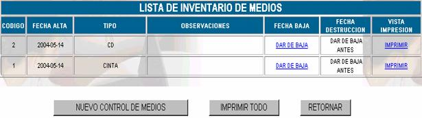
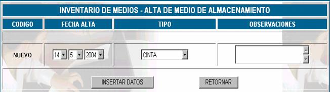
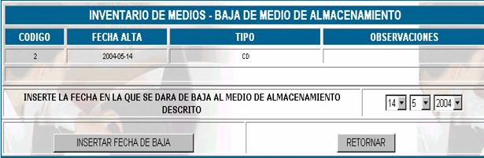
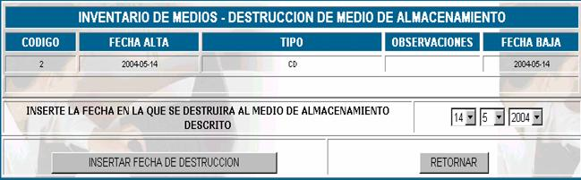

INVENTARIO DE MEDIOS
Se debe realizar un inventario de medios por exigencia del manual de procedimientos de la empresa.
Esta opción muestra la siguiente pantalla principal

Codigo; es el código asignado al medio en el momento el registro.
Fecha alta; especifica la fecha que se dio de lata al medio.
Observaciones; especifica las observaciones que se realizaron en el momento del registro.

Nuevo control de medios;
cuando se da de alta a un medio de almacenamiento, se deben llenar los datos que se muestran en la siguiente pantalla:Codigo;
este campo especifica el código de inventario que se asigna automáticamente por el sistema.Fecha alta;
especifica la fecha que se da de altaTipo;
existen varios tipos de medios de almacenamiento, escoja uno de ellos y regístrelo.Observaciones;
registre las observaciones que usted vea conveniente en el momento de dar de alta un medio.Fecha baja; especifica la fecha en que se dio de baja al medio, si es que no se dio de baja al medio aún aparecerá activo el vinculo
DAR DE BAJA , cuando usted quiera dar de baja a un medio debido a su largo periodo de utilización o por otro motivo, haga click en este vinculo y aparecerá l pantalla siguiente.
Insertar fecha de baja;
inserte la fecha de baja y presione sobre el botón INSERTAR FECHA DE BAJA
Una vez que usted da de baja a un medio se activará el vinculo
DESTRUIR si usted hace click en este vinculo le aparecerá la ventana siguiente.
Presione INSERTAR FECHA DE DESTRUCCIÓN si desea destruir el medio y RETORNAR para volver al control de medios y aparecerá marcada la fecha de destrucción.
Imprimir; para obtener un reporte completo de los medios que se tiene en inventario haga click en el vinculo
IMPRIMIR.